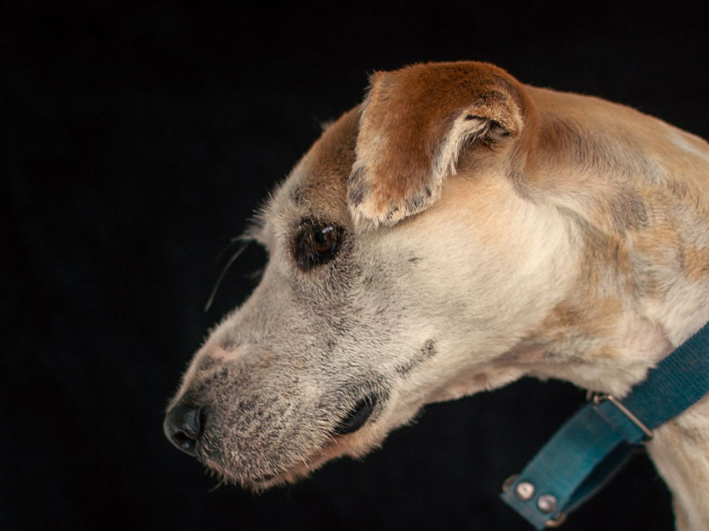
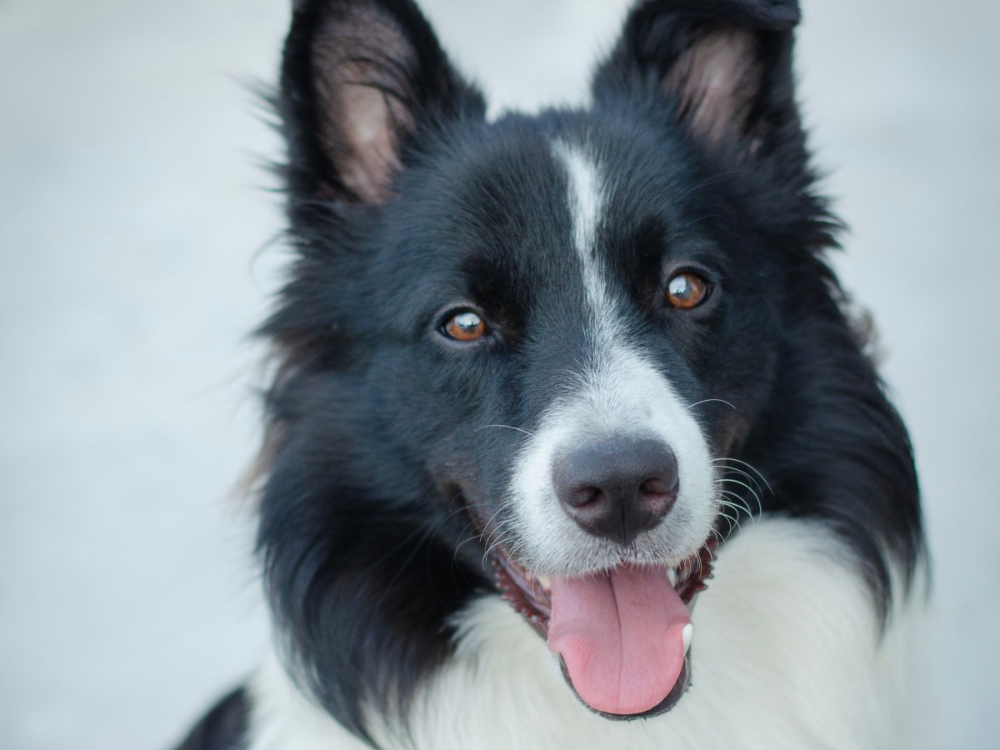
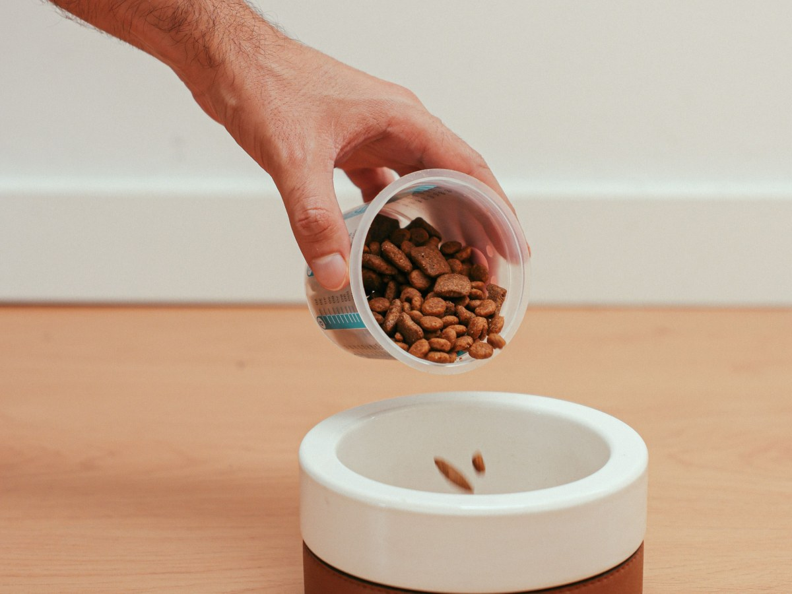
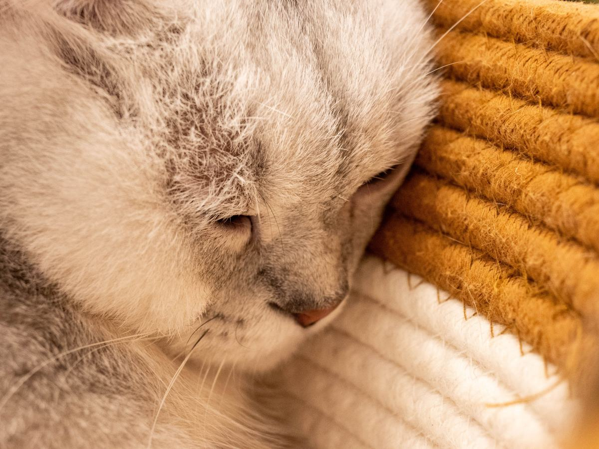
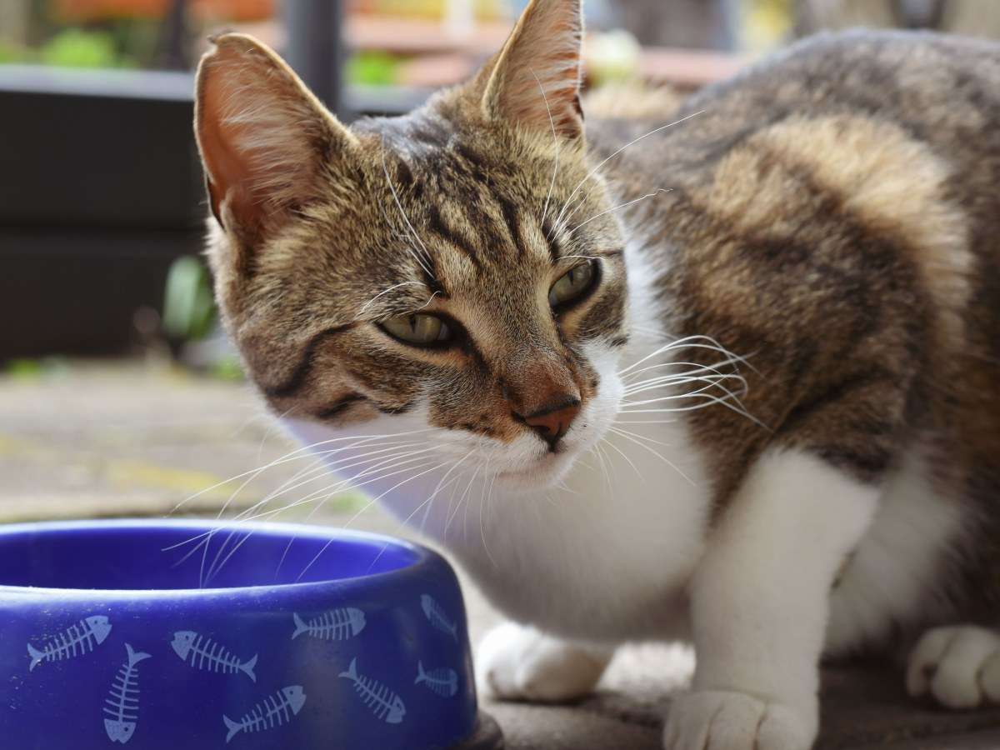
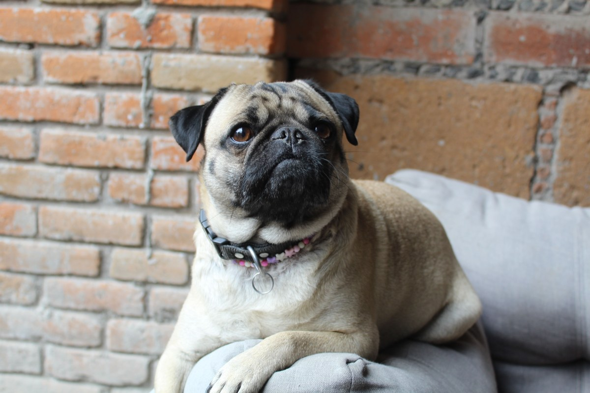
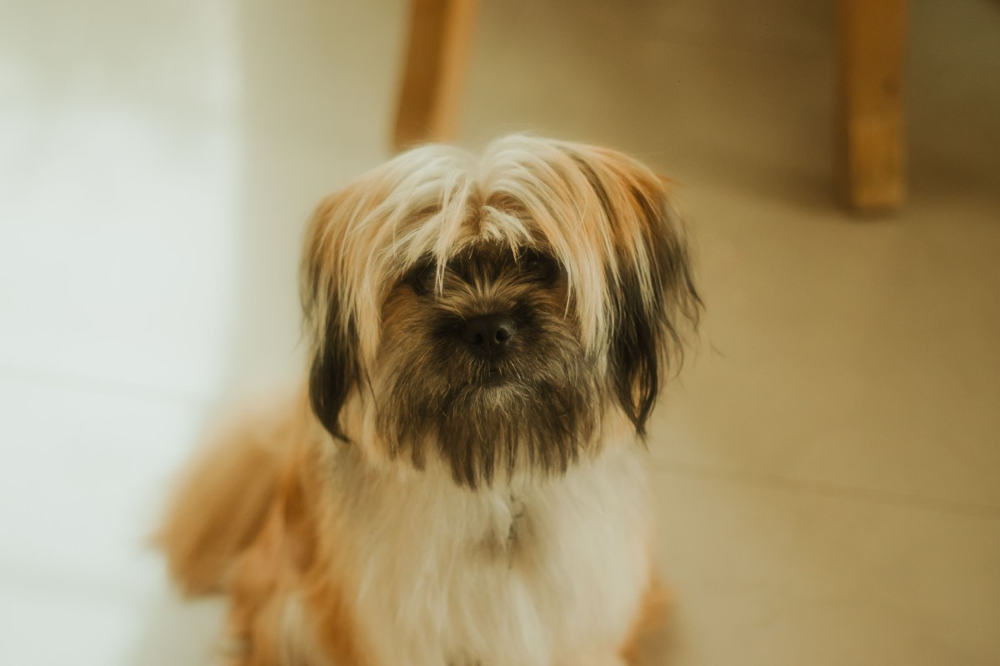
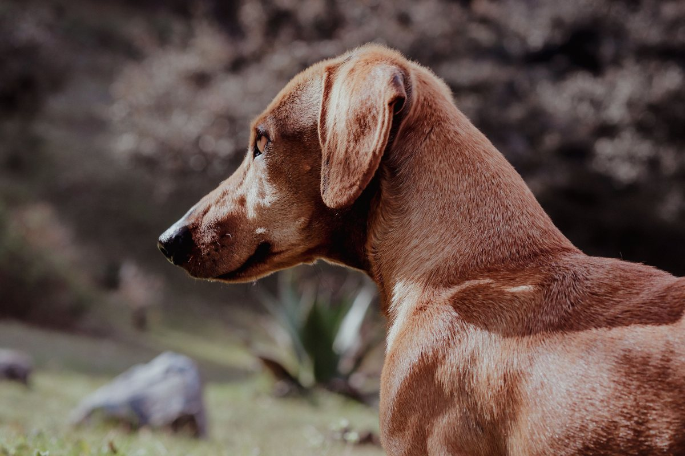

Padre Las Casas · Fuentes 385
Medicina integral, a un puente de Temuco.
Centro Integral de Medicina Animal: consultas, tratamientos y cirugías.
- 103reseñas en Google
- 4,6de nota promedio
- 3.411me gusta en Facebook
- 0páginas propias: sólo Facebook e Instagram
La consulta silenciosa
¿Está en su peso?
Pase la mano por las costillas: se tienen que sentir.
- FLACO
Se ven las costillas
Y se marcan la cadera y el lomo.
- EN SU PESO
Se sienten, no se ven
Desde arriba se nota la cintura.
- SOBREPESO
Cuesta sentirlas
La cintura casi no se ve.
- OBESO
Sin cintura
La guata cuelga y le cuesta moverse.
La evaluación y la dieta las indica la clínica.
En su peso, llega mejor a viejo.
En Fuentes 385
Lo que hay en CIMA
-

Lo que la distingue
Medicina integral
Lo dice su nombre.
-

De rutina
Consulta
Para el control de siempre.
-

Cuando algo pasa
Tratamientos
Médicos, según el caso.
-

En pabellón
Cirugías
Consulte por teléfono.
-

Para la casa
Perros y gatos
Mascotas de la ciudad.
-
Desde Temuco
A un puente
Fuentes 385, Padre Las Casas.
Servicios de su ficha en guías en línea: la clínica los confirma.
103 reseñas y un 4,6.
En Fuentes 385
Pelo, peso y siesta
Un día en la clínica



Fotos de referencia: ninguna es de la clínica.
Dónde estamos
Fuentes 385, Padre Las Casas
- Dirección
- Fuentes 385
- Teléfono
- (45) 273 3737
- Cima Temuco
- @cima_temuco
Pida hora y confirme el horario por teléfono: las guías no coinciden.
Fuentes 385, Padre Las Casas Abrir en Google Maps
Para el dueño
Qué es real y qué falta
Lo verificado
Dirección, teléfono fijo, las 103 reseñas y su Facebook.
Lo de ejemplo
La guía del peso y las fotos.
Lo que falta
El horario (las guías no coinciden), la lista de servicios y un celular con WhatsApp.